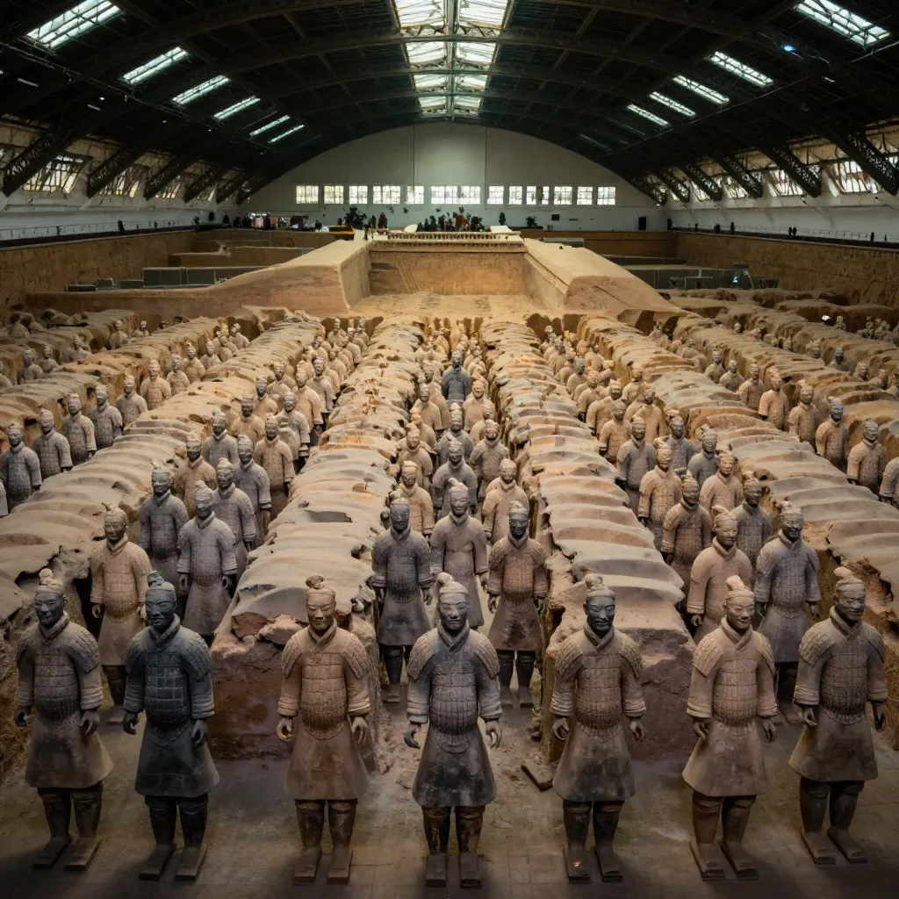

The Terracotta Army: 8,000 Clay Warriors Guarding China’s First Emperor

Something hard under the well
In March 1974, some farmers were digging a well near the city of Xi’an, in Shaanxi province, China. Their tools hit something hard under the soil. It was not water. It was part of a clay figure, more than two thousand years old.
The farmers had found one of the great discoveries of the twentieth century. It was the Terracotta Army. Terracotta means baked clay. Estimates say that the army has more than 8,000 soldiers, about 130 chariots, and about 670 horses. All of them are made of fired clay.
Who would bury a whole army? To find out, we must meet the man it was made for.
The emperor who feared death
His name was Ying Zheng. He was born in 259 BCE and became king of Qin in 247 BCE. Qin was one of several warring states that fought for control of China. By 221 BCE, Ying Zheng was about 38 years old, and he had defeated every rival. He called himself Qin Shi Huang, the First Emperor of a united China.
His reign was short, from 221 to 210 BCE, but it changed the country. He made writing, money, weights, and measures the same everywhere. He also ordered new walls that joined older ones along the northern border. They were a forerunner of the later Great Wall.
Yet he had one great fear, and it was death. He sent expeditions to look for magic islands in the Eastern Sea, where, the stories said, a drink of life could be found. Some historians think that he took drinks made with mercury, which can poison people. Nobody knows what killed him at about age 49.
So the emperor planned for a life after death. He began to build a tomb.
A tomb as big as a city
The ancient writer Sima Qian said that 700,000 men worked on the tomb. Modern sources say that the work lasted for decades. The Terracotta Army is only one part of this huge burial complex. Sources give its size as roughly 50 to 100 square kilometers.
The plan copies the emperor’s capital city. The emperor himself lies, we think, under a great mound of earth about 76 meters high. No one has ever opened it.
East of the mound, the army stands in pits. The soldiers face east. That is the direction of the lands that the emperor had conquered.
Let us walk along the pits.
Rows of soldiers, and one empty pit
Pit 1 is the largest. It is about 230 meters long and 62 meters wide. It holds the main force of foot soldiers. Experts guess that it holds from more than 3,000 to about 6,000 figures. Much of it has still not been dug up. The soldiers stand in a long underground hall with earth walls and wooden beams. The other pits hold more soldiers, horsemen, and chariots.
Then there is Pit 4, and it is empty. There are no warriors, no horses, and no chariots. It may be unfinished.
The most common explanation is that the work stopped when the emperor died in 210 BCE. His son became the Second Emperor, and the dynasty fell a few years later. Nobody knows for sure why Pit 4 stayed empty.
The soldiers in the other pits look so alive that you may wonder how they were made.
Faces from a few molds
Look closely at the faces. They have different noses, cheekbones, ears, and eyes. Some look stern, some worried, some calm. Experts say that workers used at least ten basic face molds. Some sources say eight. But workers changed each face by hand. They added clay and smoothed it with tools before the figures were fired.
The bodies came from standard parts: heads, bodies, arms, legs, and hands. Workshops made these parts in large numbers. Then workers put them together and made each figure a little different. That was like factory work, two thousand years before factories.
Sculptors and workshops also marked their names on the figures. So researchers can see which workshop made which warriors.
The soldiers were not only for show. They held real weapons.
Sharp blades and a lost rainbow
The warriors carried real bronze weapons. Some blades still have sharp edges after about 2,200 years. Some show a thin layer of a metal called chromium. Researchers first thought that this was an ancient way to stop rust. A 2019 study found that the chromium most likely came from the lacquer on the weapon handles. So it was not added on purpose.
When the army was buried, the warriors were painted in bright colors. For more than two thousand years, the paint stayed whole under the soil. But when the figures met the air during digging, the lacquer under the paint began to curl within seconds. Then the paint flaked off in a few minutes. The air in Xi’an is dry, and that made the damage fast.
Conservators are the people who protect old objects. They watched the color vanish. It is one of the sad stories of modern archaeology.
That lesson matters for the biggest question of all.
What lies in the tomb?
What we know about the inside of the mound comes from one ancient source. It is the Records of the Grand Historian by Sima Qian, written about a century after the emperor died. He wrote that the ceiling showed the stars. He wrote that there were rivers and seas of mercury, moved by machines to look like flowing water.
He also wrote that crossbow traps were set to shoot at any robber. Lamps burned the fat of a “man-fish,” which may mean a whale or a walrus. And after the tomb was sealed, he said, the workers were shut inside. Some scholars doubt this part. It is a report, and nobody has proved it.
In later years, scientists tested the soil of the mound. Some samples hold a lot of mercury. Some scholars say that pollution could explain it. Ground-penetrating radar has found signs of large rooms underground. But no one knows what is in them.
The army that still waits
China has not opened the main tomb. The reasons given are to protect the paint, to protect people from mercury, and to wait until the technology is better. The army taught a hard lesson. Its paint was lost in minutes.
So we know a lot and we do not know a lot. We know how the army was made, and we know that it was found by farmers in 1974. We do not know what Pit 4 was meant to hold. We do not know what lies in the tomb under the mound.
The emperor conquered all of China and then tried just as hard to conquer death. He did not live forever. His dynasty fell within four years of his death.
But his clay soldiers are still there. They stand in rank after rank, and all of them face east. The farmers with their well found them after two thousand years of waiting.
References & Further Reading
Wikipedia: Terracotta Army — Pit sizes, army estimates, discovery, face molds, paint flaking
📚 Recommended Reading: The Terracotta Army by John Man (on Amazon) — As an Amazon Associate, we earn from qualifying purchases.
Editorial note: The army is real and well studied, but only part of it has been dug up. What is inside the emperor's tomb is known only from Sima Qian, and some scholars doubt parts of his account. See our Editorial Policy.